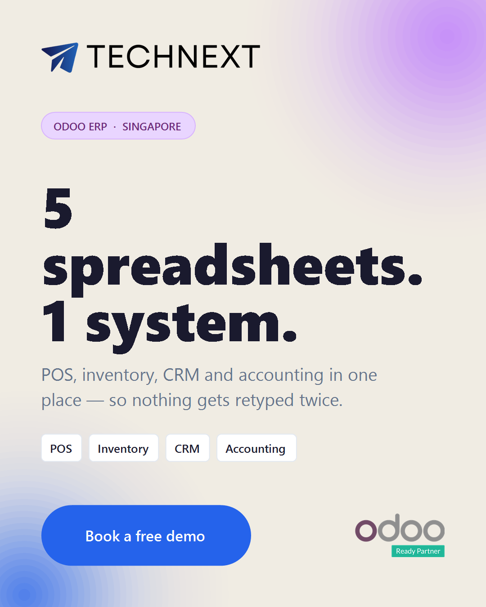

One Facebook ad, funded properly.
Most small ad budgets fail for the same reason: they are too small to produce a readable result, so nobody can tell whether the ad worked. This page picks one ad, one audience and one offer, and puts enough money behind it to find out.
1 The one ad
One creative, one message, one destination. Splitting a small budget across four ads is the fastest way to learn nothing.

{kind=link}
technext.asia has no Odoo page. Sending Odoo traffic to a homepage is the single
largest cost-per-lead penalty available, and it shows up in the data as healthy click-through
with no leads. An Instant Form needs no landing page at all. Build a real
/odoo/ page and this decision gets revisited — until then, form.
- The headline reads "5 Different Spreadsheet" — it needs the s. It is in 60pt type across the widest part of the ad.
- Re-export at exactly 1080 × 1350. The file on record is slightly taller than 4:5, and Meta crops the overflow from the edges — the bottom contact line goes first.
2 The copy
Paste straight into Ads Manager. The first line is 121 characters, which fits inside Meta's mobile truncation point — so the whole hook is visible before "See more".
Primary text
Quotations in one file. Stock in another. Invoices in a third. Nobody knows the real
numbers until someone reconciles them.
Odoo puts POS, inventory, CRM and accounting into one system — and we configure it around the
way your business already runs, not the other way round.
TechNext is an Odoo Ready Partner. Book a free 30-minute demo and we will load your own
products and prices in before the call.
| Field | Text | Count |
|---|---|---|
| Headline | Five spreadsheets, one system | 29 / 40 |
| Description | Free 30-minute Odoo demo | 24 / 30 |
| Form headline | See Odoo running on your own products | — |
| Form description | Send us a product list and we will load your SKUs, prices and tax settings into Odoo before the call. Thirty minutes, no obligation, no licence to buy upfront. | — |
| Form fields | Full name · work email · phone number · company · "What are you running today?" | — |
3 Who sees it
One ad set. Broad enough for Meta to optimise, narrow enough to be Singapore SME owners.
| Setting | Value | Why |
|---|---|---|
| Location | Singapore — People living in this location | The default includes travellers and recent visitors. Change it every time. |
| Age | 28–60 | Owner and finance-manager range. |
| Languages | English, Chinese (Simplified and Traditional) | Reflects how SG SME owners actually set their phones. |
| Interests | ERP · point of sale · inventory management software · accounting software · QuickBooks · Xero · SAP · small business | Signals someone already paying for a tool Odoo replaces. |
| Behaviours | Small business owners · Facebook Page admins | The two strongest B2B proxies Meta still offers. |
| Advantage+ audience | On, with the above as suggestions | At this budget, let Meta widen. Hard-locking a tiny audience raises CPM. |
| Exclusions | Customer list · staff · anyone who submitted a lead in 180 days | Stops paying twice for the same person. |
4 The budget
Worked from the top down. Every rate below is a planning assumption for Singapore B2B software, not a forecast — the first fortnight replaces them with real numbers.
| Step | Rate assumed | Result per month |
|---|---|---|
| Spend | SGD 50/day × 30 | SGD 1,500 |
| Impressions | CPM SGD 22SG B2B interest targeting is at the expensive end | ~68,000 |
| Link clicks | 0.9% link CTR | ~610 CPC ≈ SGD 2.46 |
| Leads | 10% of clicks submit the form | ~60 Cost per lead ≈ SGD 25 |
| Qualified | 30% are contactable and actually in market | ~18 |
| Demos held | 45% of qualified turn up | ~8 Cost per held demo ≈ SGD 190 |
| Signed clients | 12% of demos close | ~1 |
Three budget levels, and what each one actually buys
| Too small | Recommended | Scale | |
|---|---|---|---|
| Daily | SGD 8 | SGD 50 | SGD 100 |
| Monthly | SGD 250 | SGD 1,500 | SGD 3,000 |
| Leads/month | ~10 | ~60 | ~120 |
| Demos/month | ~1 | ~8 | ~16 |
| Clients/month | ~0.1 | ~1 | ~2 |
| Verdict | Unreadable. Do not run this. | Start here. | Only after 8 weeks of real numbers. |
- Meta's learning phase wants roughly 50 optimisation events per ad set per week. At SGD 8/day the ad set produces two or three leads a week, so it never exits learning — delivery stays erratic and expensive, permanently.
- Ten leads a month is statistical noise. A good week and a bad week look identical, so after three months there is still no decision to make.
- It spends SGD 750 over a quarter and produces neither a client nor an answer. The same SGD 750 spent in two weeks at SGD 50/day at least produces a readable result.
What the SGD 1,500 does not cover
- Creative refresh — one new variant every 4 weeks once the pool starts fatiguing. Design time, not media spend.
- Someone answering leads fast. An Instant Form lead goes cold within the hour. A same-day first reply is worth more than any bid adjustment on this page.
- The demo promise. The copy says we load their products and prices before the call. That is real preparation time per demo.
5 What a client costs
The only question that matters: is SGD 1,500 a sensible price for one Odoo client?
| Optimistic | Planning case | Pessimistic | |
|---|---|---|---|
| Months of spend per client | 0.7 | 1.5 | 3 |
| Media cost per signed client | SGD 1,050 | SGD 2,250 | SGD 4,500 |
| First-year contract value | ≈ SGD 13,000 at the Marketing + Odoo starter tier (USD 10k/year in the pricing model). A one-off implementation sits lower; a full Odoo build sits well above. | ||
| Return on media | 12× | ~6× | ~3× |
6 Running it
Two weeks of not touching it, then decisions on a schedule.
| When | Look at | Decision |
|---|---|---|
| Day 1–3 | Delivery only | Do not judge performance. If spend is barely moving, the audience is too narrow or the bid is capped. |
| Day 3 | Comments | Cold Odoo ads attract "how much?". Answer every one publicly — those replies do real conversion work. |
| Day 7 | CTR under 1% | The creative is the problem, not the audience. Rotate the primary text. |
| Day 7 | CTR healthy, no leads | The form is the problem. Shorten it. This is also what a missing landing page looks like in the data. |
| Day 14 | Cost per lead | Replace every assumed rate in section 4 with the observed one. Recalculate before changing anything. |
| Day 28 | Cost per held demo | The first number worth acting on. Under SGD 250, increase the daily budget by 20% — no more, or delivery re-enters learning. |
| Day 56 | Signed clients | Scale, hold, or stop — with real numbers on the table for the first time. |
Before it goes live
- Typo fixed and creative re-exported at exactly 1080 × 1350; 1:1 version produced, or Stories and Reels excluded.
- Pixel and Conversions API both firing.
Leadfires on the confirmation only — firing it on the form page inflates conversions and sends the algorithm after the wrong people. - Privacy policy URL confirmed to resolve — Meta blocks lead forms without one.
- Naming convention set:
TN | Meta | Odoo | Cold-SME | SG | 2026-08, with UTMs on every link. - Lead routing tested end to end: submit a real test lead and confirm a human is notified.
- A named person owns replies during business hours, and sales has agreed to honour "free 30-minute demo, no licence to buy upfront".